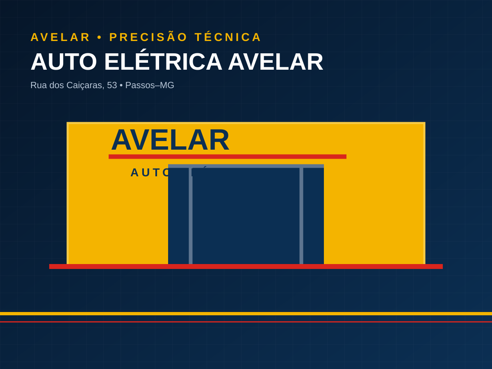

Contato
Fale direto com a oficina.
Envie os dados do veículo ou abra a rota para a Rua dos Caiçaras, 53, em Passos.

WhatsApp
Triagem rápida.
Informe modelo, ano, motorização e o sintoma. Se houver luz ou mensagem no painel, envie uma foto.
WhatsApp (35) 99869-5641Telefone e e-mail
(35) 3521-1848
autoeletricaavelar@hotmail.com
Rua dos Caiçaras, 53 • Passos–MG • CEP 37901-518
Como chegarPassos • Minas Gerais
Oficina física.
Use o botão de rota para abrir a localização no Google Maps.